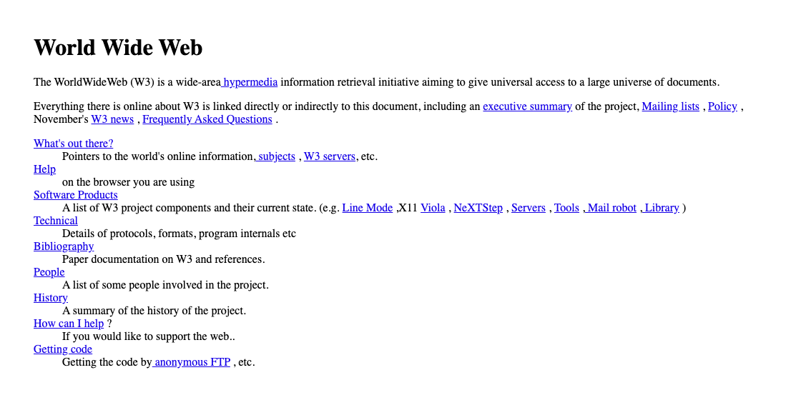

<!DOCTYPE html>
<html lang="en">
  <head>
    <meta charset="utf-8" />
    <meta name="viewport" content="width=device-width, initial-scale=1.0, maximum-scale=1.0, user-scalable=no" />

    <title>HTML / CSS - MM4</title>
    <link rel="stylesheet" href="./css/reveal.css" />
    <link rel="stylesheet" href="./css/theme/solarized.css" id="theme" />
    <link rel="stylesheet" href="./css/highlight/zenburn.css" />
    <link rel="stylesheet" href="./css/print/paper.css" type="text/css" media="print" />

  </head>
  <body>
    <div class="reveal">
      <div class="slides"><section  data-markdown><script type="text/template">

## MM4

# HTML / CSS

<a target="_blank" style="font-size: 24px; margin-top: 80px; display: block;" href="https://nclsndr.github.io/hetic-html-css-mm4-2019/#/">nclsndr.github.io/hetic-html-css-mm4-2019</a>
</script></section><section  data-markdown><script type="text/template">
## Who am I?

- [Nicolas André](https://twitter.com/nclsndr) — UX Engineer at <a target="_blank" href="https://www.chance.co">Chance</a>
</script></section><section  data-markdown><script type="text/template">
# And you?
</script></section><section  data-markdown><script type="text/template">
## About this cycle

26 nov. <br>
[Internet](#/8) - [The Web](#/25) - [HTML](#/34) - [CSS](#/45) <br>
03 dec. <br>
10 dec. <br>
Sandboxes: [Basis](#/41)</script></section><section  data-markdown><script type="text/template">
<h1 style="color: #FFF;">Ready?</h1>

<!-- .slide: data-background="assets/ready.gif" -->
</script></section><section  data-markdown><script type="text/template">
# 🧐

### Who is HTML?
</script></section><section  data-markdown><script type="text/template">
### Some valid definition 

by [Mozilla docs](https://developer.mozilla.org/en-US/docs/Web/HTML)

__HTML__ (HyperText Markup Language) is the most basic building block of the Web. It defines the meaning and structure of web content. [...]
</script></section><section  data-markdown><script type="text/template">
# 🤷‍♀️
### Ok, but why?
</script></section><section  data-markdown><script type="text/template">
<h2 style="color: #FFF;">Back in 1969</h2>

<!-- .slide: data-background="https://media.giphy.com/media/3o7aD46cTjbkp0gT5e/giphy.gif" --></script></section><section  data-markdown><script type="text/template">
<div>
  
</div>

### 🇺🇸 👮‍♀️ 💬 ☢️ 💬 👨‍💼</script></section><section  data-markdown><script type="text/template">


[Defense Advanced Research Projects Agency](https://www.darpa.mil/about-us/about-darpa) — since 1958</script></section><section  data-markdown><script type="text/template"><div>
  
</div>

## SRI
[Stanford Research Institute](https://en.wikipedia.org/wiki/SRI_International) — since 1946
</script></section><section  data-markdown><script type="text/template"><div>
  
</div>

### [Douglas Engelbart](https://en.wikipedia.org/wiki/Douglas_Engelbart)

American engineer and inventor, and early computer and Internet pioneer

Founder of Augmentation Research Center (ARC) at SRI
</script></section><section  data-markdown><script type="text/template"><div>
  
  
</div>
<div>
  
  
</div>

### 🧑‍🏫 📺 💬 📺 🧑‍🏫

<aside class="notes"><p><a href="https://www.lib.utah.edu/digital-scholarship/arpanet/">https://www.lib.utah.edu/digital-scholarship/arpanet/</a>
<a href="https://en.wikibooks.org/wiki/The_Computer_Revolution/Networks/Internet">https://en.wikibooks.org/wiki/The_Computer_Revolution/Networks/Internet</a></p>
</aside></script></section><section  data-markdown><script type="text/template">> The goal was to exploit new computer technologies to meet the needs of military command and control against nuclear threats, achieve survivable control of US nuclear forces, and improve military tactical and management decision making.

*— [Stephen J. Lukasik](https://en.wikipedia.org/wiki/ARPANET#Debate_on_design_goals), Director of DARPA (1967–1974)*
</script></section><section  data-markdown><script type="text/template">> The ARPANET was not started to create a Command and Control System that would survive a nuclear attack, as many now claim. [...]. Rather, the ARPANET came out of our frustration that there were only a limited number of large, powerful research computers in the country, and that many research investigators, who should have access to them, were geographically separated from them.

*— [Charles Herzfeld](https://en.wikipedia.org/wiki/ARPANET#Debate_on_design_goals), ARPA Director (1965–1967)*
</script></section><section  data-markdown><script type="text/template">### [Request For Comments](https://tools.ietf.org/html/rfc1)

<div>
  
</div>

Applying scientific method for a collaborative definition of protocols
</script></section><section  data-markdown><script type="text/template"><div>
  
</div>

1969</script></section><section  data-markdown><script type="text/template"><div>
  
</div>

1970</script></section><section  data-markdown><script type="text/template"><div>
  
</div>

1973 - [source: vox.com](https://www.vox.com/a/internet-maps)</script></section><section  data-markdown><script type="text/template"><!-- .slide: data-background="assets/twitter_wake_up.gif" --></script></section><section  data-markdown><script type="text/template">
## Internet VS Web?
</script></section><section  data-markdown><script type="text/template">
### RFC1122 - Internet Protocol Suite

<div>
  
</div>
</script></section><section  data-markdown><script type="text/template">### Internet is a set of network protocols

### The Web is an abstract application on top of it</script></section><section  data-markdown><script type="text/template"><!-- .slide: data-background="assets/the-web.jpg" --></script></section><section  data-markdown><script type="text/template"># The web</script></section><section  data-markdown><script type="text/template">### Who's that guy?

<div>
  
</div></script></section><section  data-markdown><script type="text/template">
<div>
  
</div>

### [Tim Berners-Lee](https://en.wikipedia.org/wiki/Tim_Berners-Lee)

English engineer and computer scientist — CERN researcher</script></section><section  data-markdown><script type="text/template">
## 🧑‍🔬 ✉️ 📡 📞 📬 🧑‍🔬 🤯

Berners-Lee observed how hard it was to share information amoung researches — Especially linking articles
</script></section><section  data-markdown><script type="text/template">## His solution?</script></section><section  data-markdown><script type="text/template"><code class="large">
  HyperText Markup Language
</code>

<div>
  
</div></script></section><section  data-markdown><script type="text/template">### Ok, but IRL it looks more like 👉</script></section><section  data-markdown><script type="text/template"><div>
  
</div></script></section><section  data-markdown><script type="text/template"><h1 style="color: #FFF;">But that's another story...</h1>
<!-- .slide: data-background="assets/close_curtain.gif" --></script></section><section  data-markdown><script type="text/template">
# HTML

## The web building block</script></section><section  data-markdown><script type="text/template"><div>
  
</div></script></section><section  data-markdown><script type="text/template"><!-- .slide: data-background="assets/matrix_code.gif" -->

# 👇</script></section><section  data-markdown><script type="text/template">
### HTML is a markup language based on XML

[Extensible Markup Language (XML)](https://en.wikipedia.org/wiki/XML)
</script></section><section  data-markdown><script type="text/template"><div>
  
</div></script></section><section  data-markdown><script type="text/template">
### HTML Element

<div class="markup">
  <pre>&lt;</pre><span class="markup__tagname">tag</span> <br>
  <span class="markup__attribute">attribute</span><span>="value"</span><br>
  <pre>&gt;</pre><br>
  <span class="markup__content">Content?</span><br>
  <pre>&lt;/</pre><span class="markup__tagname">tag</span><pre>&gt;</pre><br>
</div>
</script></section><section  data-markdown><script type="text/template">
### Common HTML tags

```html
<html>Document root</html>
<head>Document meta header</head>
<body>Page content</body>
<div>Default container</div>
<h1>Heading 1</h1>...<h6>Heading 6</h6>
<p>Paragraph</p>
<a>HyperText link</a>
<form>Form of user inputs</form>
<header>Header component</header>
<footer>Footer component</footer>
<nav>Containing navigation items</nav>
...
```
</script></section><section  data-markdown><script type="text/template"><iframe
  class="codesandbox"
  src="https://codesandbox.io/embed/sleepy-edison-jeq14?autoresize=1&fontsize=14&hidenavigation=1&theme=dark"
  title="html-basis"
  allow="geolocation; microphone; camera; midi; vr; accelerometer; gyroscope; payment; ambient-light-sensor; encrypted-media; usb"
  sandbox="allow-modals allow-forms allow-popups allow-scripts allow-same-origin"
></iframe></script></section><section  data-markdown><script type="text/template"># ✋
### Ok, but all this looks pretty ugly right?</script></section><section  data-markdown><script type="text/template">How to get from
<div>
  
</div></script></section><section  data-markdown><script type="text/template">To
<div>
  
</div></script></section><section  data-markdown><script type="text/template">
# HTML ❤️ CSS
</script></section><section  data-markdown><script type="text/template">
## CSS

```css
p {
  color: red;
}
```

[Cascading Style Sheet](https://developer.mozilla.org/en-US/docs/Web/CSS)
</script></section><section  data-markdown><script type="text/template"></script></section><section  data-markdown><script type="text/template"><div>
  
</div></script></section><section  data-markdown><script type="text/template"><div>
  
</div></script></section><section  data-markdown><script type="text/template"><div>
  
</div></script></section><section  data-markdown><script type="text/template">
## Ressources
</script></section><section  data-markdown><script type="text/template">
## That's all folks

Thank you
</script></section></div>
    </div>

    <script src="./lib/js/head.min.js"></script>
    <script src="./js/reveal.js"></script>

    <script>
      function extend() {
        var target = {};
        for (var i = 0; i < arguments.length; i++) {
          var source = arguments[i];
          for (var key in source) {
            if (source.hasOwnProperty(key)) {
              target[key] = source[key];
            }
          }
        }
        return target;
      }

      // Optional libraries used to extend on reveal.js
      var deps = [
        { src: './lib/js/classList.js', condition: function() { return !document.body.classList; } },
        { src: './plugin/markdown/marked.js', condition: function() { return !!document.querySelector('[data-markdown]'); } },
        { src: './plugin/markdown/markdown.js', condition: function() { return !!document.querySelector('[data-markdown]'); } },
        { src: './plugin/highlight/highlight.js', async: true, callback: function() { hljs.initHighlightingOnLoad(); } },
        { src: './plugin/zoom-js/zoom.js', async: true },
        { src: './plugin/notes/notes.js', async: true },
        { src: './plugin/math/math.js', async: true }
      ];

      // default options to init reveal.js
      var defaultOptions = {
        controls: true,
        progress: true,
        history: true,
        center: true,
        transition: 'default', // none/fade/slide/convex/concave/zoom
        dependencies: deps
      };

      // options from URL query string
      var queryOptions = Reveal.getQueryHash() || {};

      var options = extend(defaultOptions, {"transition":"slide","transitionSpeed":"fast"}, queryOptions);
    </script>


    <script>
      Reveal.initialize(options);
    </script>
  </body>
</html>
